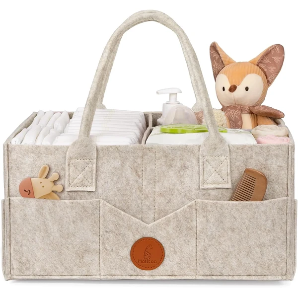
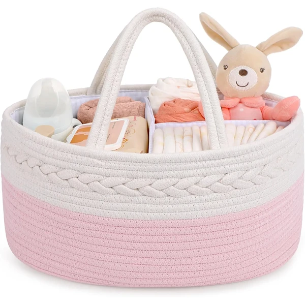
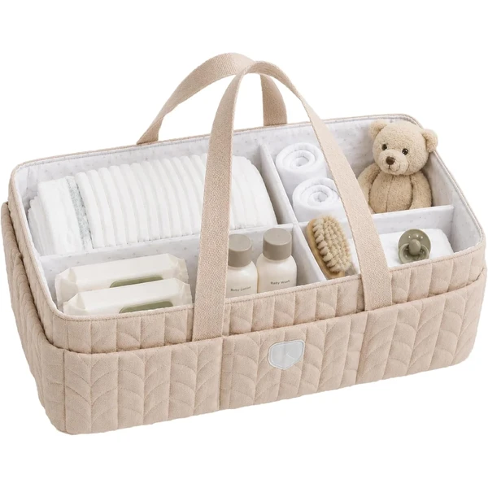
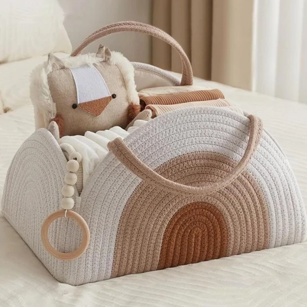
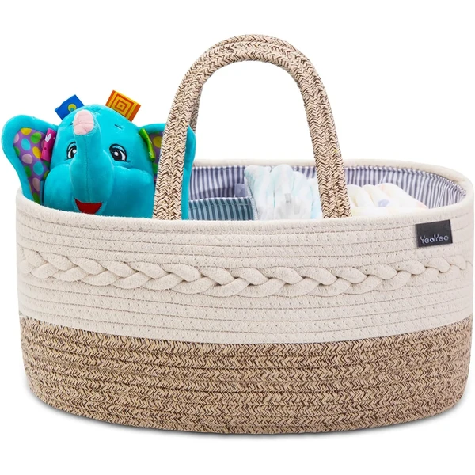
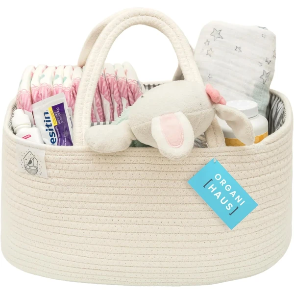

Cesta organizadora de pañales Maliton
Una cesta de fieltro con compartimentos desmontables y bolsillos exteriores, pensada para guardar pañales, toallitas y otros artículos del bebé en un mismo lugar. Incluye asa plegable para llevarla de una habitación a otra.
⭐ ¿Por qué nos gusta?
- ✔ Compartimentos desmontables y ajustables.
- ✔ Ocho bolsillos exteriores para objetos pequeños.
- ✔ Asa plegable para transportarla fácilmente.
💬 Lo que más destacan las familias
Una de las cosas más comentadas es lo fácil que resulta encontrar cada cosa gracias a los compartimentos, sin tener que rebuscar en una cesta revuelta. También se agradece que se pueda mover de habitación en habitación sin esfuerzo.
Ver en Amazon

Cesta organizadora y cambiador Maliton
Una cesta portátil de algodón con particiones extraíbles, pensada para guardar pañales, toallitas y ropa del bebé de forma ordenada. Su diseño ligero permite llevarla de viaje o de casa en casa.
⭐ ¿Por qué nos gusta?
- ✔ Particiones extraíbles y ajustables.
- ✔ Algodón suave y fácil de limpiar.
- ✔ Ligera y fácil de transportar.
💬 Lo que más destacan las familias
Muchos padres coinciden en que ayuda a mantener el orden en el cambiador desde el primer día, algo que se valora mucho en las primeras semanas. También gusta que sea tan ligera que se pueda llevar de una estancia a otra sin problema.
Ver en Amazon

Cesta organizadora Koala Babycare
Una cesta con divisores extraíbles pensada para tener pañales, toallitas y cremas siempre organizados durante el cambio. Sus asas resistentes permiten moverla fácilmente entre habitaciones.
⭐ ¿Por qué nos gusta?
- ✔ Divisores extraíbles para personalizar el espacio.
- ✔ Asas resistentes para llevarla por toda la casa.
- ✔ Diseño neutro que encaja en cualquier habitación.
💬 Lo que más destacan las familias
Se repite bastante el comentario de que los divisores hacen que todo quede a mano y visible de un vistazo. Las asas resistentes también se llevan buenas críticas, porque aguantan el peso sin dar problemas con el uso diario.
Ver en Amazon

Organizador de pañales YUEMING
Una cesta de algodón tejido a mano con un separador en forma de T que crea tres zonas distintas para guardar pañales, toallitas y otros artículos del bebé. El separador se puede quitar para usarla como cesta única.
⭐ ¿Por qué nos gusta?
- ✔ Separador en T con tres zonas de almacenaje.
- ✔ Cuerda de algodón 100%, tejida a mano.
- ✔ Asas extendidas fáciles de transportar.
💬 Lo que más destacan las familias
Entre los comentarios más habituales aparece lo práctico del separador en T para tener cada cosa en su sitio. También se valora el acabado en cuerda de algodón, que da un aire cuidado a la habitación del bebé.
Ver en Amazon

Cesta organizadora de algodón 3 compartimentos
Una cesta de cuerda de algodón tejida a mano con tres separadores extraíbles, pensada para mantener ordenados los artículos del bebé. También sirve como bolsa de mano o cesta multiusos en casa.
⭐ ¿Por qué nos gusta?
- ✔ Tres separadores extraíbles y ajustables.
- ✔ Cuerda de algodón 100%, tejida a mano.
- ✔ Multiusos: también sirve como cesta o bolsa de mano.
💬 Lo que más destacan las familias
Quienes la han probado destacan que sigue siendo útil una vez pasada la etapa de pañales, ya que sirve igual de bien como cesta de juguetes o de colada. El tejido de cuerda también gusta por su aspecto cuidado y resistente.
Ver en Amazon

Cesta organizadora OrganiHaus
Una cesta de cuerda de algodón con un divisor extraíble de tres compartimentos y forro interior suave, pensada para guardar pañales, ropa y accesorios del bebé. Incluye dos asas reforzadas para transportarla con facilidad.
⭐ ¿Por qué nos gusta?
- ✔ Divisor extraíble con tres compartimentos.
- ✔ Forro interior ultrasuave.
- ✔ Dos asas reforzadas para llevarla de un lado a otro.
💬 Lo que más destacan las familias
No es raro encontrar comentarios sobre lo resistente que resulta pese a ser tan ligera, algo que se nota especialmente al llevarla de viaje. El forro interior suave también se menciona como un detalle que marca la diferencia frente a otras cestas similares.
Ver en Amazon